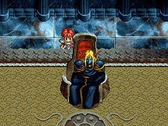
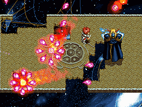
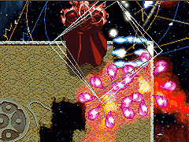

目次 > ゲームについて > 日本Falcom 攻略 > Ys > ボス戦 > ダルク＝ファクト
らんの眼
Ys(イース) Ys Eternal(VE)/Ys Complete
| 概要 | 情報 | ボス戦 |
| 敵キャラ一覧 | アイテム一覧 | 攻略チャート |
| 地図 | ダウンロード | イースの本 |
| 経験値表 | 地名一覧 | タイムアタック |
| ETERNAL / Complete 比較 | キャラクター一覧 | |
| Ys 攻略へ | 目次へ戻る |
| ダルク＝ファウクト(Dalk= Fukt) |
| まずはじめに、「SILVER SWORD」、「SILVER ARMER」、「SILVER
SHIELD」の3
つを装備していないと、ダメージを与えられず、また多くのダメージを受けてしまうので、事前に装備を変更しておきましょう。  ダルク＝ファクトの攻撃としては、どこからともなく飛ばしてくる炎の球と、ダメージを食らったときに地面に穴を開けアドルを落とす攻撃以外にありません。火の玉は破裂して放射状に飛ぶので、よけることはまず不可能ですが、地面に穴を開ける攻撃は確実に回避してください。こちらの攻撃は、アドルが穴に落ちると即死なので非常に危険です。  ダルク＝ファクトにダメージを与えるごとに移動できる足場が少なくなるので、「POWER RING」や「EVEL RING」などの攻撃力重視の装備にし、短期戦を挑んだ方が無難です。また、ダルク＝ファクトの動きは、無限大(∞)記号のような動きをするので、彼の行動を先読みし、また彼と同じ位置を移動し連続してダメージを与えるといいです。アドルよりも移動速度が速いので、純粋に追いかけてるだけでは意味がありません。 ただし、調子に乗ってダメージを与えすぎ、移動できる場所がなくなり、集中砲火を受けながら何もできずにやられることはさけましょう。  経験値：0 |
| 説明文 |
| Dalk=Fukt (ダルク＝ファクト) Ruined "Ys Priest" (堕落した(破滅した) イースの神官) |
| 概要 | 情報 | ボス戦 |
| 敵キャラ一覧 | アイテム一覧 | 攻略チャート |
| 地図 | ダウンロード | イースの本 |
| 経験値表 | 地名一覧 | タイムアタック |
| ETERNAL / Complete 比較 | キャラクター一覧 | |
| ページ上部へ | Ys 攻略へ | 目次へ戻る |